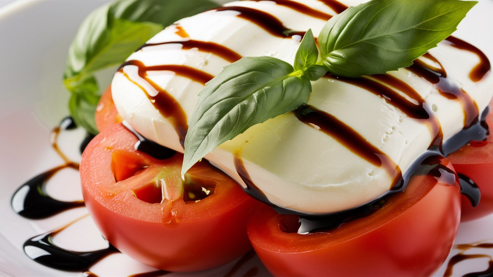

Caprese Salad
Ingredients:
Fresh tomatoes - 2-3, sliced
Fresh mozzarella cheese - 1 ball, sliced
Fresh basil leaves - 10-12
Extra virgin olive oil - 2 tbsp
Balsamic vinegar - 1 tbsp
Salt - to taste
Black pepper - to taste
Method:
Prepare the ingredients:
Slice the tomatoes and mozzarella cheese. Wash and dry the basil leaves.
Assemble the salad:
Arrange the tomato and mozzarella slices on a plate, alternating them with basil leaves.
Dress the salad:
Drizzle the salad with extra virgin olive oil and balsamic vinegar. Season with salt and black pepper to taste.
Serve:
Serve the Caprese Salad immediately.